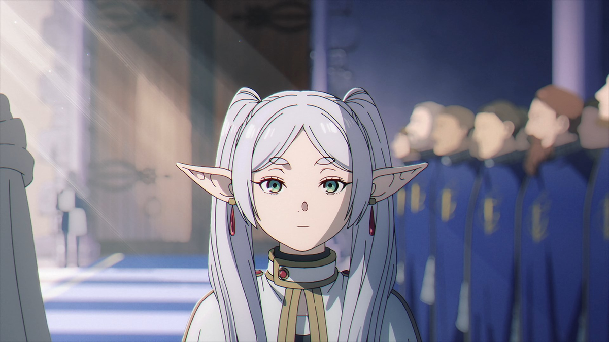

Фрирен — одна из самых могущественных магов в мире, она ненавидит демонов и безжалостно убивает их, известна как маг, погубивший больше всего демонов в истории, за что получила прозвище «Провожающая в последний путь».Фрирен — бывший член отряда авантюристов под предводительством героя Химмеля, который после десятилетнего похода победил Короля Демонов и восстановил гармонию в мире. Воссоединившись со своей бывшей компанией пятьдесят лет спустя, Фрирен обнаруживает, что её спутники заметно постарели, и Химмель вскоре умирает от старости после их последнего приключения с целью увидеть метеоритный дождь. Во время похорон Фрирен выразила сожаление, что не попыталась узнать о нём больше. Затем она навещает других своих бывших товарищей и берёт в ученицы девушку по имени Ферн. Фрирен получает приглашение отправиться в легендарное место упокоения душ на дальнем севере, где хочет вновь увидеть Химмеля, достойно попрощаться с героем и выразить свои чувства. Чтобы исполнить эти мечты, Фрирен отправляется в путешествие вместе с Ферн, попутно продолжая изучать магию.
| Имя | Фрирен |
| Пол | женский |
| Тип порсанажа | положительный |
| Характер | Смелый, спокойный, надежный, добрый, героический. |
| Внешний вид | Белые волосы, изумрудно-голубые глаза, невысокий рост. |
| Судьба | Фрирен вместе с командой побждает короля демонов, а пото уходит путешествовать по миру.Обзавевшись ученицей, продолжает путешествовать обучая ее магии. |
| Особености | Бесмертна, обладает огромной силой маны, есть титул "Провожающая в последний путь", убила владыку демонов. |